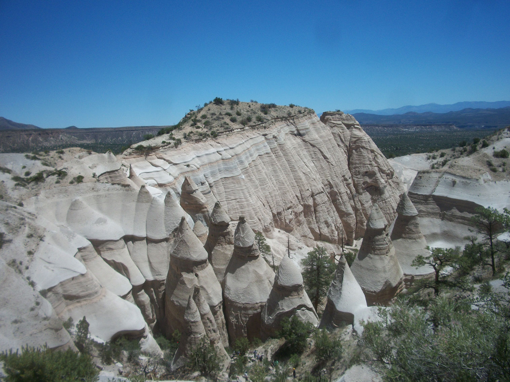
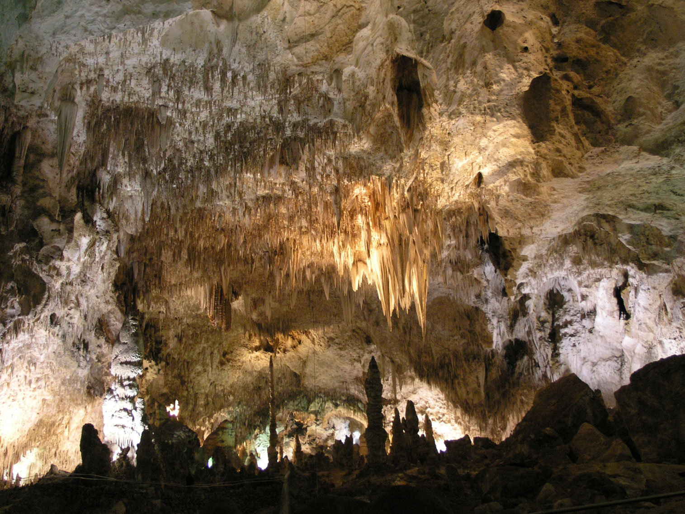
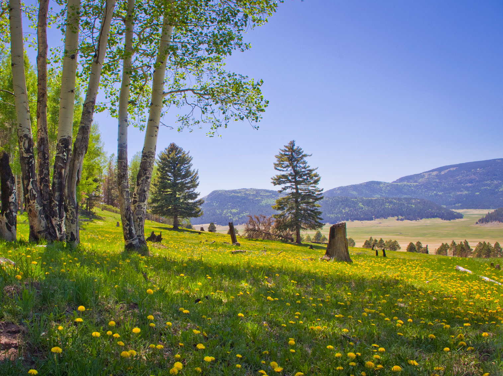
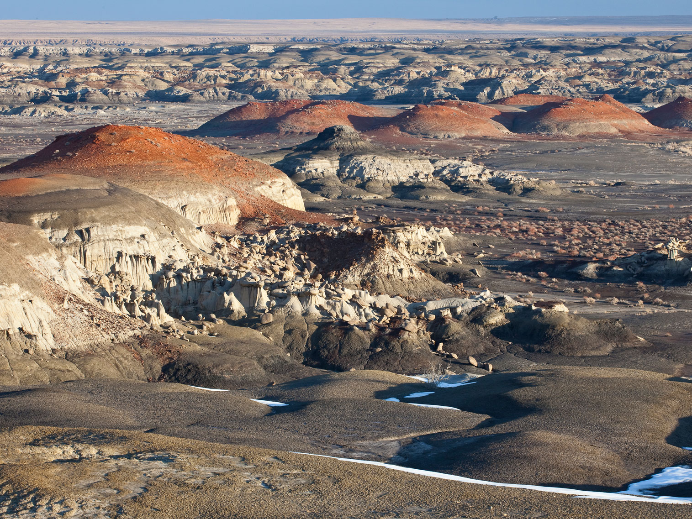
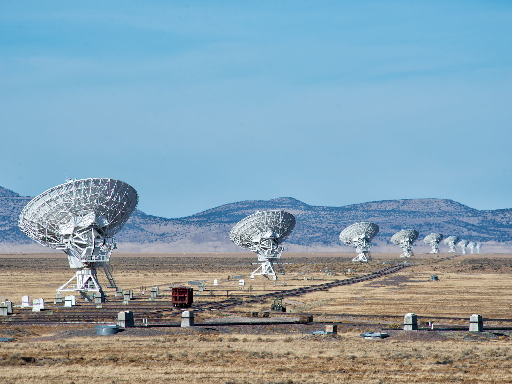

New Mexico Travel Guide
Explore Santa Fe's adobe art galleries, hike Rio Grande canyons, and discover ancient pueblos amid New Mexico's dramatic desert scenery.
Top Locations


New Mexico Map
Places to See in New Mexico

Cathedral Basilica of St Francis de Assisi
Santa Fe, NM
Cities

Kasha Katuwe Tent Rocks NM
VitaleBaby at English Wikipedia, Public domain, via Wikimedia Commons; Image Size Adjusted


Carlsbad Caverns National Park
Daniel Mayer, CC BY-SA 3.0, via Wikimedia Commons; Image Size Adjusted

National Parks

Valles Caldera National Preserve
Thomas Shahan, CC BY 2.0, via Wikimedia Commons; Image Size Adjusted
.jpg){kind=link}
Landmark and Landscapes Northeast New Mexico

Bisti De Na Zin Wilderness
Bureau of Land Management, Public domain, via Wikimedia Commons; Image Size Adjusted
.jpg){kind=link}
Landmark and Landscapes Northwest New Mexico

NRAO Very Large Array
John Fowler, CC BY 2.0, via Wikimedia Commons; Image Size Adjusted

Landmark and Landscapes South New Mexico
Overview
New Mexico, the "Land of Enchantment," is a Southwestern state of about 2.1 million people with a layered history shaped by Native American, Spanish, Mexican, and American cultures. Santa Fe is the capital and Albuquerque is the largest city, and the state became the 47th state on January 6, 1912.
Visitors come for the adobe architecture and art galleries of Santa Fe and Taos, the ancient pueblos and cliff dwellings, and the New Mexican food, including green and red chile. Others come for White Sands, Carlsbad Caverns, the Albuquerque International Balloon Fiesta, Roswell and UFO lore, and the film locations of Bonanza Creek Ranch and the Breaking Bad tours.
Geography
New Mexico has the southern Rocky Mountains, including the Sangre de Cristo Range, in the north, the Colorado Plateau in the northwest, the Chihuahuan Desert in the south, and the Great Plains in the east. Wheeler Peak, at 13,161 feet (4,011 m), is the highest point. The Rio Grande flows through the center of the state, and Santa Fe, at about 7,000 feet, is the highest state capital in the U.S. New Mexico has many volcanic fields, badlands, and dark skies.
History
Ancestral Puebloans built the great houses of Chaco Canyon, and the Mogollon, Navajo, Apache, and Pueblo peoples have lived here for centuries. Spanish explorer Coronado arrived in 1540, Juan de Oñate colonized the region in 1598, and Santa Fe was founded around 1610. The Pueblo Revolt of 1680 drove the Spanish out until 1692, Mexico took over in 1821, and the Santa Fe Trail opened trade with the U.S. New Mexico was annexed after the Mexican-American War, became a territory in 1850, and became the 47th state in 1912. Los Alamos developed the first atomic bomb, tested at Trinity Site in 1945.
National Protected Areas
New Mexico has two national parks, Carlsbad Caverns and White Sands, and many national monuments, including Bandelier, Petroglyph, El Malpais, El Morro, Aztec Ruins, Gila Cliff Dwellings, and Capulin Volcano. Chaco Culture National Historical Park is a World Heritage Site, and Pecos and Valles Caldera are other highlights.
State Parks and Historic Sites
New Mexico's state parks and landmarks include City of Rocks, with volcanic rock formations, and Cimarron Canyon, with a mountain river. Bisti/De-Na-Zin Wilderness has strange badlands formations, Shiprock is a volcanic monolith sacred to the Navajo, and the Very Large Array is a field of giant radio telescopes. Other highlights are the Blue Hole and Jemez Historic Site.
Seasons and When to Visit
Fall is the most popular season, with golden aspens, harvest festivals, chile roasting, and the Albuquerque International Balloon Fiesta in early October. Summer is warm, with monsoon storms in July and August, and cooler in the mountains, and Santa Fe has the Opera, Spanish Market, and Indian Market. Winter brings skiing at Taos and holiday farolito displays, and spring is windy. Carlsbad Caverns' bat flights run from late spring through October.
This article uses material from the Wikipedia article "New_Mexico", which is released under the Creative Commons Attribution-Share-Alike License 3.0. Additional information was drawn from National Park Service, New Mexico State Parks, and New Mexico Tourism.